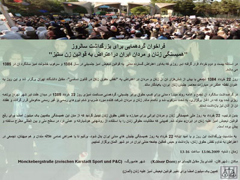

|
|

فراخوان گردهمایی برای بزرگداشت سالروزهمبستگی زنان و مردان ایران در اعتراض به قوانین زن ستیز / آلمان
جمعه22 خرداد 1388
فراخوان گردهمایی برای بزرگداشت سالروز
"همبستگی زنان و مردان ایران در اعتراض به قوانین زن ستیز"

در آستانه بیست و دوم خرداد قرار گرفته ایم. روزی که یادآور اعتراض گسترده مدنی به قوانین تبعیض آمیز جنسیتی سال 1384 و سرکوب خشونت آمیز سالگرد آن در 1385 می باشد.
روز 22 خرداد 1384 تجمعی با بیش از شش هزار تن از زنان و مردان در اعتراض به "نقض حقوق زنان در قانون اساسی" مقابل دانشگاه تهران برگزار شد و این روز به عنوان نقطه عطفی در مبارزات معاصر جنبش زنان ایران به یادگار ماند.
در گرامیداشت سالگرد آن تجمع و ادامه روند مبارزه مدنی برای کسب حقوق برابر جنسیتی ،گردهمایی مسالمت آمیزی روز 22 خرداد 1385 در میدان هفت تیر شهر تهران برنامه ریزی شده بود که در آن آغاز برگزاری به شدت سرکوب شد و ناتمام ماند. زنان و مردان شرکت کننده مورد ضرب و شتم نیروهای رسمی و غیر رسمی حکومتی قرار گرفتند و هفتاد تن از آنان نیز بازداشت شددند .
بدین ترتیب ، 22 خرداد به روز ملی همبستگی زنان و مردان ایرانی برای مبارزه با نقض حقوق زنان تبدیل گردید که از متن این همبستگی «کمپین یک میلیون آمضا برای رفع قوانین تبعیض امیز علیه زنان درایران » متولد شد. کمپینی که مطالبات حقوقی زنان را با استفاده از روش های هوشیارانه و عملی تر در سطح ملی و بین المللی مطرح ساخته و پیش برده است.
به مناسبت بزرگداشت این روز و با امید این که 22 خرداد به روز همبستگی جنبش های مدنی ایران بدل شود برآنیم تا با همراهی تمامی علاقه مندان و هم میهنان تجمعی در اعتراض به تداوم نقض حقوق زنان بازداشت و حبس فعالین جامعه مدنی ایران در دو شهر آلمان برگزار نماییم.
زمان : شنبه 13.06.2009 ساعت 16-13
مکان : شهرکلن ، فضای باز مقاوبل کلیسای دم
شهر هامبورگ ...
کمپین یک میلیون نامضا برای تغییر قوانین تیعض آمیز علیه زنان (آۀمان )